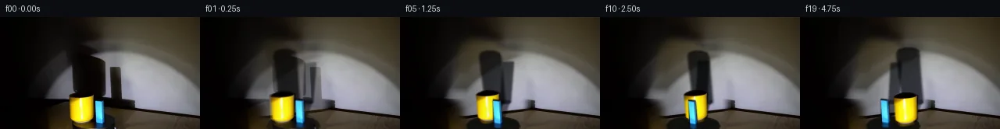

![首帧]()

Round 00
2026-11-05T00:54:00.050889+00:00像素候选变化代码 +315/−0inspection 更新
pixels fe128c8f0c274a39 · code e3abf050d84eb3c6
查看本轮 generate.py 真实 diff
--- previous/generate.py +++ current/generate.py @@ -0,0 +1,315 @@ +#!/usr/bin/env python3 +"""Generate a deterministic 20-frame clockwise turntable continuation. + +All imagery is derived from first_frame.png plus local analytic masks and warps. +No external imagery, model, renderer, or network service is used. +""" + +from pathlib import Path +import math + +import cv2 +import numpy as np +from PIL import Image, ImageDraw + +import artifact_io + + +ROOT = Path(__file__).resolve().parent +W, H = 256, 144 +CX, CY = 119.0, 139.0 +OMEGA = math.radians(7.0) + + +def soft_polygon(points, blur=1.0): + """Return a soft HxW floating mask for a polygon.""" + m = np.zeros((H, W), np.uint8) + cv2.fillPoly(m, [np.round(points).astype(np.int32)], 255, lineType=cv2.LINE_AA) + if blur: + m = cv2.GaussianBlur(m, (0, 0), blur) + return m.astype(np.float32) / 255.0 + + +def ellipse_mask(center, axes, blur=0.0): + m = np.zeros((H, W), np.uint8) + cv2.ellipse( + m, + tuple(np.round(center).astype(int)), + tuple(np.round(axes).astype(int)), + 0, + 0, + 360, + 255, + -1, + cv2.LINE_AA, + ) + if blur: + m = cv2.GaussianBlur(m, (0, 0), blur) + return m.astype(np.float32) / 255.0 + + +def over(dst, src, alpha): + """Alpha composite RGB src onto floating RGB dst.""" + a = np.clip(alpha, 0, 1)[..., None] + return dst * (1.0 - a) + src * a + + +def reconstruct_clean_background(src): + """Remove the source shadows/objects using the opposite spotlight hemisphere. + + The spotlight is close to radially symmetric about x=170. Mirroring the clean + right hemisphere supplies wall/floor texture and the correct radial falloff, + while a feathered hand mask limits replacement to the occupied central band. + """ + base = src.astype(np.float32).copy() + mirrored = src[:, np.clip(340 - np.arange(W), 0, W - 1)].astype(np.float32) + + # Broad source shadow and object region. A soft edge avoids a visible seam. + pts = np.array( + [(78, 38), (89, 27), (115, 30), (127, 42), (157, 48), + (164, 91), (160, 143), (82, 143), (81, 112), (64, 103)], + np.float32, + ) + replace = soft_polygon(pts, blur=5.0) + base = over(base, mirrored, replace) + + # The central core was fully occupied. Give it a slightly stronger clean copy. + core = soft_polygon(np.array([(86, 43), (119, 34), (158, 58), + (154, 143), (87, 143)], np.float32), blur=2.4) + base = over(base, mirrored, core * 0.94) + + # Retain the source's photographic grain without temporal shimmer. + return np.clip(base, 0, 255) + + +def make_cutout(src, kind): + """Extract a softly antialiased source object with a geometric support mask.""" + if kind == "mug": … diff truncated; 228 more lines …